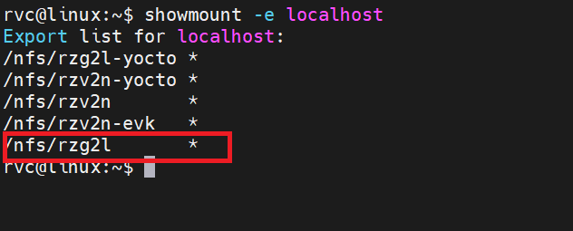
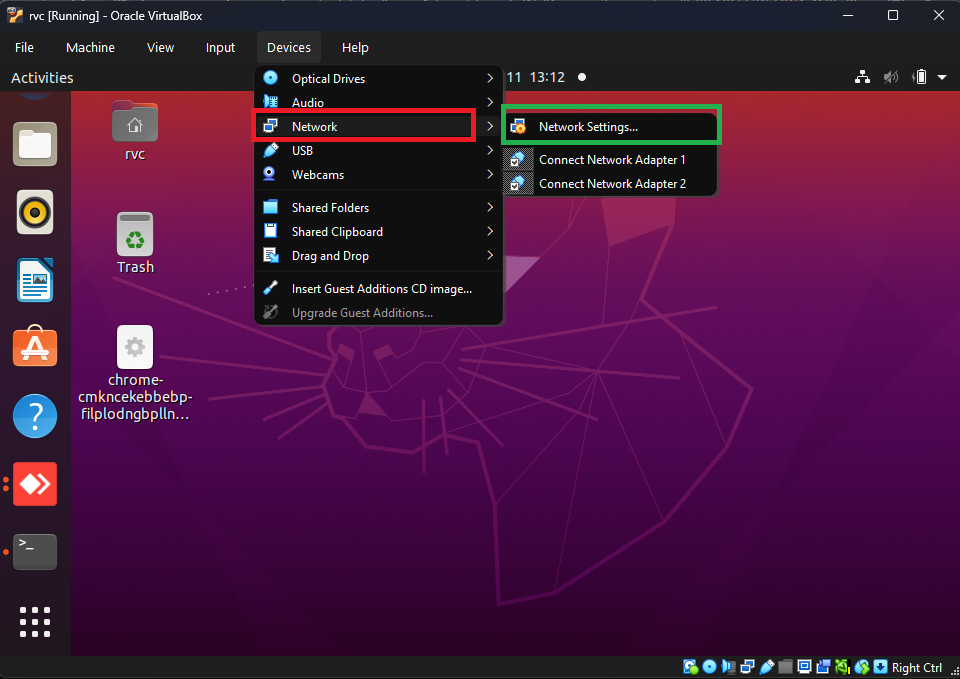
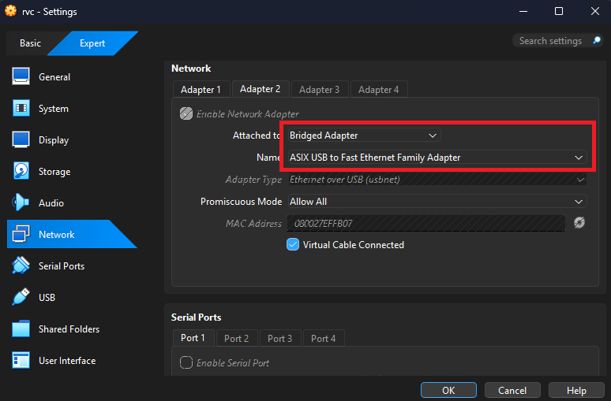
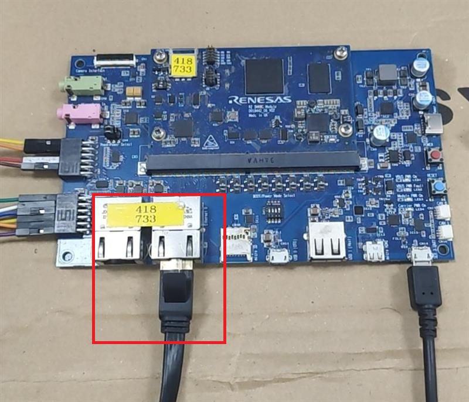

Booting with TFTP and NFS¶
Set up TFTP Server¶
Download and install tftp-hpa by command (/srv/tftp/ is used for TFTP server directory)
sudo apt-get install tftpd-hpa
Check status of tftpd-hpa by command:
service tftpd-hpa status
Disable firewall by command:
sudo ufw disable
Set up NFS Server¶
Download and install NFS server by commands:
sudo apt-get install nfs-kernel-server
Start a NFS server:
sudo /etc/init.d/nfs-kernel-server start
Check status of nfs service:
service nfs-kernel-server status
Create a directory for NFS:
sudo mkdir -p /nfs/rzg2l
Open /etc/exports by text editor:
sudo vim /etc/exports
Add the following settings:
/nfs/rzg2l *(rw,no_subtree_check,sync,no_root_squash)
Force an NFS server to read /etc/exports:
sudo exportfs -a
Confirm the NFS server starts successfully:
showmount -e localhost

Prepare Image, DTB, RootFS¶
Copy Image and r9a07g044l2-smarc.dtb to /srv/tftp/:
sudo cp <Image path> <device tree path> /srv/tftp/
Copy rootfs (*.tar.bz2) to the mount point. In this case that is located at /nfs/rzg2l:
sudo cp <rootfs path> /nfs/rzg2l
sudo tar -xvf <file_name>
Set static IP¶
Network setting for virtual machine:
Select Device->Network->Network Settings

Network setting:
Config setting following the picture

Check network interfaces on host machine by command ifconfig
rvc@linux:~$ ifconfig
enp0s3: flags=4163<UP,BROADCAST,RUNNING,MULTICAST> mtu 1500
inet 10.0.2.15 netmask 255.255.255.0 broadcast 10.0.2.255
inet6 fd17:625c:f037:2:f9e4:4f39:455c:de85 prefixlen 64 scopeid 0x0<global>
inet6 fd17:625c:f037:2:d69:fb94:9bcd:25a prefixlen 64 scopeid 0x0<global>
inet6 fe80::1b28:23b2:b5e4:b231 prefixlen 64 scopeid 0x20<link>
ether 08:00:27:96:16:a4 txqueuelen 1000 (Ethernet)
RX packets 478311 bytes 389572624 (389.5 MB)
RX errors 0 dropped 0 overruns 0 frame 0
TX packets 208008 bytes 60924331 (60.9 MB)
TX errors 0 dropped 0 overruns 0 carrier 0 collisions 0
enx080027effb07: flags=4163<UP,BROADCAST,RUNNING,MULTICAST> mtu 1500
inet 192.168.1.3 netmask 255.255.255.0 broadcast 192.168.1.255
inet6 fe80::a00:27ff:feef:fb07 prefixlen 64 scopeid 0x20<link>
ether 08:00:27:ef:fb:07 txqueuelen 1000 (Ethernet)
RX packets 0 bytes 0 (0.0 B)
RX errors 0 dropped 0 overruns 0 frame 0
TX packets 0 bytes 0 (0.0 B)
TX errors 0 dropped 0 overruns 0 carrier 0 collisions 0
lo: flags=73<UP,LOOPBACK,RUNNING> mtu 65536
inet 127.0.0.1 netmask 255.0.0.0
inet6 ::1 prefixlen 128 scopeid 0x10<host>
loop txqueuelen 1000 (Local Loopback)
RX packets 165328 bytes 50240248 (50.2 MB)
RX errors 0 dropped 0 overruns 0 frame 0
TX packets 165328 bytes 50240248 (50.2 MB)
TX errors 0 dropped 0 overruns 0 carrier 0 collisions 0
In this case I set static ip for enx080027effb07.
To set static ip for enx080027effb07 , edit setting in /etc/network/interfaces
Add setting below into the file:
auto lo
iface lo inet loopback
iface enx080027effb07 inet static
address 192.168.1.3 # <IP>
netmask 255.255.255.0 # <netmask>
Restart machine to apply new setting by using command reboot
Setting static ip for enx080027effb07 by command:
sudo ifconfig enx080027effb07 192.168.1.3
Connect Host machine and device¶
Connect serial port and Ethernet port to host machine

U-boot config in device¶
Set MAC address:
setenv ethaddr 74:90:50:00:00:d6
Set board ip and server ip by command
setenv ipaddr 192.168.1.5
setenv serverip 192.168.1.3
Setting bootcmd variable to specify name of Image and device tree file.
setenv bootcmd 'tftp 0x48080000 Image; tftp 0x48000000 r9a07g044l2-smarc.dtb; booti 0x48080000 - 0x48000000'
Setting bootars to specify the location of rootfs
setenv bootargs 'console=ttySC0,115200n8 ip=192.168.1.5:192.168.1.3::::eth0 rootwait root=/dev/nfs rw nfsroot=192.168.1.3:/nfs/rzg2l,nfsvers=3,tcp noinitrd nohlt panic=1 earlyprintk=ttySC0,115200n8'
Save environment if you want to autoboot with the config (optional)
saveenv
Check connection by command:
ping 192.168.1.3 # serverip
Start booting by command:
boot
Expected boot logs
Hit any key to stop autoboot: 0
Using ethernet@11c20000 device
TFTP from server 192.168.1.3; our IP address is 192.168.1.5
Filename 'Image'.
Load address: 0x48080000
Loading: #################################################################
#################################################################
#################################################################
#################################################################
#################################################################
#################################################################
#################################################################
#################################################################
#################################################################
#################################################################
#################################################################
#################################################################
#################################################################
#################################################################
#################################################################
#################################################################
#################################################################
#################################################################
#################################################################
#################################################################
#################################################################
#################################################################
#################################################################
#################################################################
#################################################################
#################################################################
#################################################################
##############
151.4 KiB/s
done
Bytes transferred = 25963008 (18c2a00 hex)
Using ethernet@11c20000 device
TFTP from server 192.168.1.3; our IP address is 192.168.1.5
Filename 'r9a07g044l2-smarc.dtb'.
Load address: 0x48000000
Loading: ###
51.8 KiB/s
done
Bytes transferred = 39425 (9a01 hex)
Moving Image from 0x48080000 to 0x48200000, end=49b80000
## Flattened Device Tree blob at 48000000
Booting using the fdt blob at 0x48000000
Loading Device Tree to 0000000057ff3000, end 0000000057fffa00 ... OK
Starting kernel ...